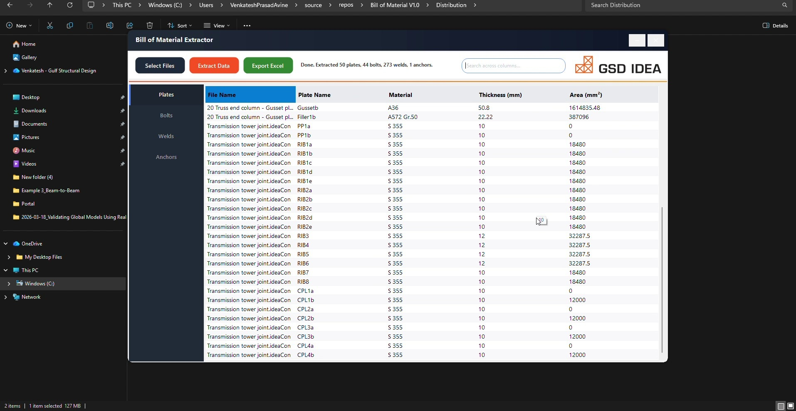

1. Complex Geometry Made Simple
Traditional hand calculations fall short for complex joints. Import your geometry directly from standard CAD software and visualize the exact node seamlessly.
2. Code-Compliant Analysis
Apply structural loads and instantly see the stress gradients, deformation, and bolt forces using advanced CBFEM technology.
3. Automated Reporting
Generate precise Bills of Materials and export comprehensive, university-verified PDF reports in seconds to keep your engineering teams ahead of schedule.